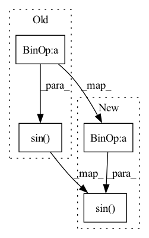

Pattern ID :713
Before Change
omega, time_seq = self.omega, self.time_seq
window = self.window
basis_real, basis_imag = torch.cos(- omega.unsqueeze(dim=1) * time_seq.unsqueeze(dim=0)), torch.sin( - omega.unsqueeze(dim=1) * time_seq.unsqueeze(dim=0))
basis_real, basis_imag = basis_real.unsqueeze(dim=1), basis_imag.unsqueeze(dim=1)
if not self.onesided:
_, basis_real_conj, _ = torch.split(basis_real, [1, n_basis // 2 - 1, 1], dim=0)
_, basis_imag_conj, _ = torch.split(basis_imag, [1, n_basis // 2 - 1, 1], dim=0)After Change
omega, n = self.frequency, self.time_seq
window = self.window
omega_n = omega.unsqueeze(dim=1) * n.unsqueeze(dim=0)
if self.trainable_phase:
phi = self.phase
basis_real, basis_imag = torch.cos(-(omega_n + phi.unsqueeze(dim=1))), torch.sin( -(omega_n + phi.unsqueeze(dim=1)))
else:
basis_real, basis_imag = torch.cos(-omega_n), torch.sin(-omega_n)
basis_real, basis_imag = basis_real.unsqueeze(dim=1), basis_imag.unsqueeze(dim=1)
In pattern: SUPERPATTERN
Frequency: 4
Non-data size: 4
Instances Fragment ID: 2399889
Project Name: tky823/dnn-based_source_separation
Commit Name: 8d3f8d3f63b0a9b29ccecacbc3114fd42d440772
Time: 2021-09-30
Author: 40362510+tky823@users.noreply.github.com
File Name: src/models/filterbank.py
M Class Name: FourierEncoder
N Class Name: FourierEncoder
M Method Name: forward(2)
N Method Name: forward(2)
M Parent Class: nn.Module
N Parent Class: nn.Module
M File Name: src/models/filterbank.py
N File Name: src/models/filterbank.py
M Start Line: 45
M End Line: 45
N Start Line: 49
N End Line: 55
Before Change
n_bins = input.size(1)
input_real, input_imag = torch.split(input, [n_bins // 2, n_bins // 2], dim=1)
basis_real, basis_imag = torch.cos(omega.unsqueeze(dim=1) * time_seq.unsqueeze(dim=0)), torch.sin( omega.unsqueeze(dim=1) * time_seq.unsqueeze(dim=0))
basis_real, basis_imag = basis_real.unsqueeze(dim=1), basis_imag.unsqueeze(dim=1)
_, basis_real_conj, _ = torch.split(basis_real, [1, n_basis // 2 - 1, 1], dim=0)
_, basis_imag_conj, _ = torch.split(basis_imag, [1, n_basis // 2 - 1, 1], dim=0)After Change
n_bins = input.size(1)
input_real, input_imag = torch.split(input, [n_bins // 2, n_bins // 2], dim=1)
omega_n = omega.unsqueeze(dim=1) * n.unsqueeze(dim=0)
if self.trainable_phase:
phi = self.phase
basis_real, basis_imag = torch.cos(omega_n + phi.unsqueeze(dim=1)), torch.sin( omega_n + phi.unsqueeze(dim=1))
else:
basis_real, basis_imag = torch.cos(omega_n), torch.sin(omega_n)
basis_real, basis_imag = basis_real.unsqueeze(dim=1), basis_imag.unsqueeze(dim=1)
Fragment ID: 2399886
Project Name: tky823/dnn-based_source_separation
Commit Name: 8d3f8d3f63b0a9b29ccecacbc3114fd42d440772
Time: 2021-09-30
Author: 40362510+tky823@users.noreply.github.com
File Name: src/models/filterbank.py
M Class Name: FourierDecoder
N Class Name: FourierDecoder
M Method Name: forward(2)
N Method Name: forward(2)
M Parent Class: nn.Module
N Parent Class: nn.Module
M File Name: src/models/filterbank.py
N File Name: src/models/filterbank.py
M Start Line: 126
M End Line: 126
N Start Line: 147
N End Line: 153
Before Change
@staticmethod
def forward(x: torch.Tensor) -> torch.Tensor:
// See paper sec. 3.2, final paragraph, and supplement Sec. 1.5 for discussion of factor 30.
return torch.sin( 30 * x)
class Swish(nn.Module):
r Applies the swish function element-wise.After Change
@staticmethod
def forward(x: torch.Tensor) -> torch.Tensor:
// See paper sec. 3.2, final paragraph, and supplement Sec. 1.5 for discussion of factor 30.
out = torch.sin( 30 * x)
return out
Fragment ID: 2399882
Project Name: lornatang/cgan-pytorch
Commit Name: 48ea9c692c84adbc58264a1e23745546b245cee6
Time: 2021-06-01
Author: liuchangyu1111@gmail.com
File Name: cgan_pytorch/activation.py
M Class Name: Sine
N Class Name: Sine
M Method Name: forward(1)
N Method Name: forward(1)
M Parent Class: nn.Module
N Parent Class: nn.Module
M File Name: cgan_pytorch/activation.py
N File Name: cgan_pytorch/activation.py
M Start Line: 122
M End Line: 122
N Start Line: 130
N End Line: 132
Before Change
@staticmethod
def forward(x: torch.Tensor) -> torch.Tensor:
// See paper sec. 3.2, final paragraph, and supplement Sec. 1.5 for discussion of factor 30.
return torch.sin( 30 * x)
class Swish(nn.Module):
r Applies the swish function element-wise.After Change
@staticmethod
def forward(x: torch.Tensor) -> torch.Tensor:
// See paper sec. 3.2, final paragraph, and supplement Sec. 1.5 for discussion of factor 30.
out = torch.sin( 30 * x)
return out
Fragment ID: 2399883
Project Name: lornatang/gan-pytorch
Commit Name: 5029d750ce2b69ae170c75cc1cf673500cd74503
Time: 2021-06-01
Author: liuchangyu1111@gmail.com
File Name: gan_pytorch/activation.py
M Class Name: Sine
N Class Name: Sine
M Method Name: forward(1)
N Method Name: forward(1)
M Parent Class: nn.Module
N Parent Class: nn.Module
M File Name: gan_pytorch/activation.py
N File Name: gan_pytorch/activation.py
M Start Line: 122
M End Line: 122
N Start Line: 130
N End Line: 132